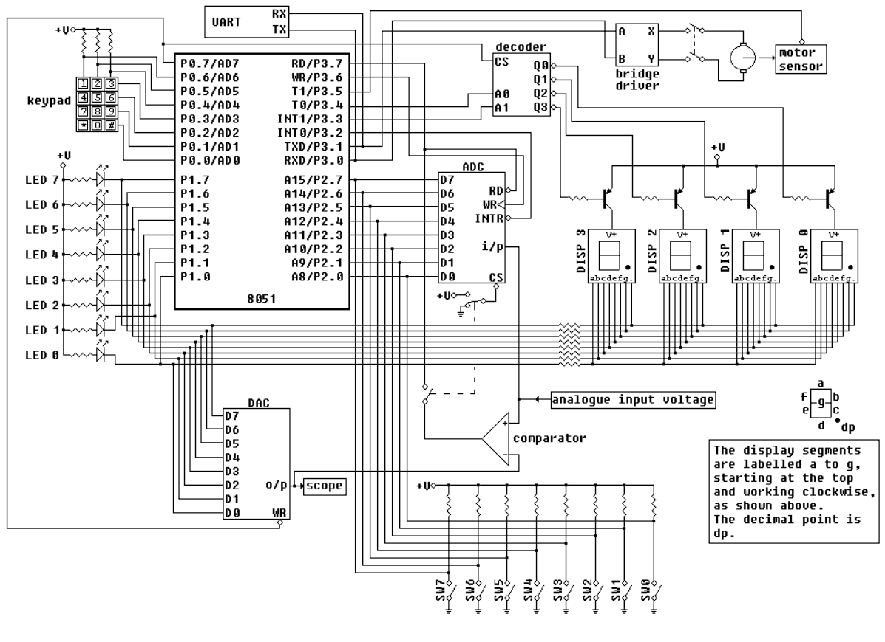

Analog-to-Digital Converter
Read Instructions
Instructions
Click
View Circuit Diagram
to see how the 8051 and LEDs are connected in logic diagram and in block diagram.
Click
View Assembly Code
to analyse the assembly code used for this experiment.
Now according to your analysis write your code in the
Assembly Code Editor
.
Click
Check Code
to verify your program against the given code.
If correct → a success message will appear and
Start Simulation
will be enabled.
If incorrect → you’ll be asked to review and correct your program.
(Optional) You can directly copy code into editor by clicking on
Use Code
in View Assembly code popup.
After validation, move the
Analog Input
slider and click
Convert
to convert the analog input to digital output.
Observe the equivalent output on the 7 segment displays and. You can move the slider and click on convert if you want to convert for other values.
If you want to save your program, click
Download Code
. It will be stored as
adc_code.asm
.
Click
Reset
to clear the editor, and reset everything to default.
Close
Assembly Code Editor
Tip: Click "View Assembly Code" then "Use Code" to copy it into the editor.
View Circuit Diagram
View Assembly Code
Check Code
Download Code
Components used in this experiment:
8051 Microcontroller, ADC, DISP1, DISP0.
Flow of circuit:
Analog Input Voltage ⟶ ADC ⟶ 8051 Microcontroller ⟶ DISP1&DISP0.

Figure : Logic Diagram
View Block Diagram
Close
ADC Code
Use Code
Close
Analog Input
Voltage:
2.5 V
0V
1V
2V
3V
4V
5V
Convert
Reset
Output on 7-Segment Display